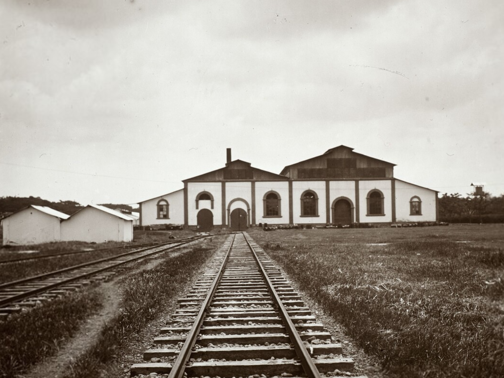
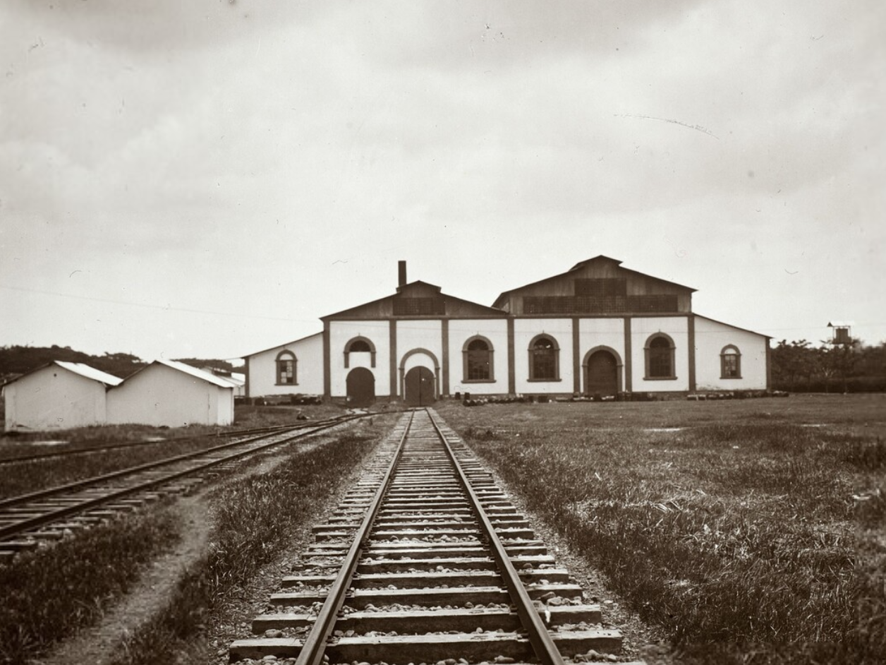

Pabrik Gula Banjaratma merupakan salah satu bangunan peninggalan pemerintah Hindia Belanda yang sekarang dimanfaatkan sebagai Heritage Rest Area. Pabrik Gula Banjaratma terletak di Kecamatan Bulakamba, Kabupaten Brebes, Provinsi Jawa Tengah. Kawasan ini terdiri dari sebuah bangunan pabrik untuk kegiatan produksi gula, beberapa rumah dinas pekerja pabrik, dan struktur kereta. Saat ini kawasan tersebut hanya menyisakan sebuah bangunan pabrik untuk kegiatan produksi gula dan dua rumah dinas pekerja pabrik. Hingga saat ini Pabrik Gula Banjaratma masih berstatus Objek Diduga Cagar Budaya (ODCB) sejak inventarisasi cagar budaya Kabupaten Brebes yang dilakukan oleh BPCB Jateng pada 2011 lalu.
Di wilayah Kabupaten Brebes, industri gula menempati posisi penting dalam pertumbuhan ekonomi kolonial. Majalah perdagangan umum Hindia Belanda, Het industrieel verleden van de suiker industrie op Java vanaf 1870 tot heden menyebutkan terdapat 185 pabrik gula di Jawa termasuk Pabrik Gula Banjaratma hingga 11 Februari 1932. Dalam Peta Kolonial Belanda tahun 1918, Pabrik Gula Banjaratma disebut Station Bandjaratma, yang merujuk pada Stasiun Pengujian atau Proefstations. Proefstations adalah fasilitas khusus yang digunakan untuk melakukan penelitian ilmiah tentang cara budidaya gula dan produksinya. Pada tahun 1848 Gerrit Jan Mulder pertama kali mengembangkan ide ini di Pabrik Gula Bogor, Mulder berpendapat bahwa teknologi yang paling optimal harus digunakan dalam produksi gula. Menurut Leidelmeijer (1997), menggunakan air sebagai bahan bakar untuk menggerakkan mesin uap adalah teknologi yang paling cocok di Jawa. Karena inovasi ini, Proefstations memainkan peran penting dalam keberhasilan produksi gula di Jawa.
Pada tahun 1908, Pabrik Gula Banjaratma didirikan oleh N.V. Cultuurmaatschappij, menurut Inventaris van de archieven van de Cultuur, Handel-en Industriebank Koloniale Bank; Cultuurbank NV, (1847) 1881-1969. Pabrik ini mulai beroperasi pada tahun 1913 dan harus berhenti beroperasi pada tahun 1998 karena terjadi penurunan angka produksi gula sehingga mengalami kerugian, lalu pada tahun 1998 pabrik gula ini secara resmi ditutup. Beberapa mesin yang masih berfungsi digunakan di pabrik gula lain. Pada masa reformasi, masyarakat sekitar merasa Pabrik Gula Banjaratma dapat dimanfaatkan, sehingga bangunan dan beberapa mesin pabrik dijarah.
Laporan koordinasi dan peninjauan revitalisasi Pabrik Gula Banjaratma tahun 2018 menunjukkan bahwa kondisi kawasan ini telah berubah secara signifikan. Setelah pembangunan jalan tol Pejagan-Pemalang pada tahun 2016, sebagian lahan Pabrik Gula Banjaratma terkena dampak karena sangat dekat dengan proyek tersebut. Kawasan ini mengalami banyak kerusakan sebelum diubah dan direvitalisasi, sehingga banyak ruangan tidak dapat diidentifikasi. Kawasan Pabrik Gula Banjaratma akhirnya direvitalisasi dan diubah menjadi rest area KM 260 B Jalan Tol Pejagan-Pemalang pada tahun 2018. Pada tahun 2019, area tersebut ditetapkan sebagai Rest Area Warisan. Setiap ruang mengalami perubahan fungsi sebagai hasil dari adaptasi dan revitalisasi, sebagian besar ruangan di bangunan utama pabrik telah direkonstruksi.Terdapat tinggalan langka yang masih ada di kawasan ini berupa roda mesin di area penggilingan tebu dan area tungku pembakaran. Sekarang, bekas bangunan utama pabrik digunakan sebagai tempat pengunjung untuk makan dan minum, serta pusat oleh-oleh khas Brebes dengan 179 toko UMKM.
-------------------------------------------------------------
 
